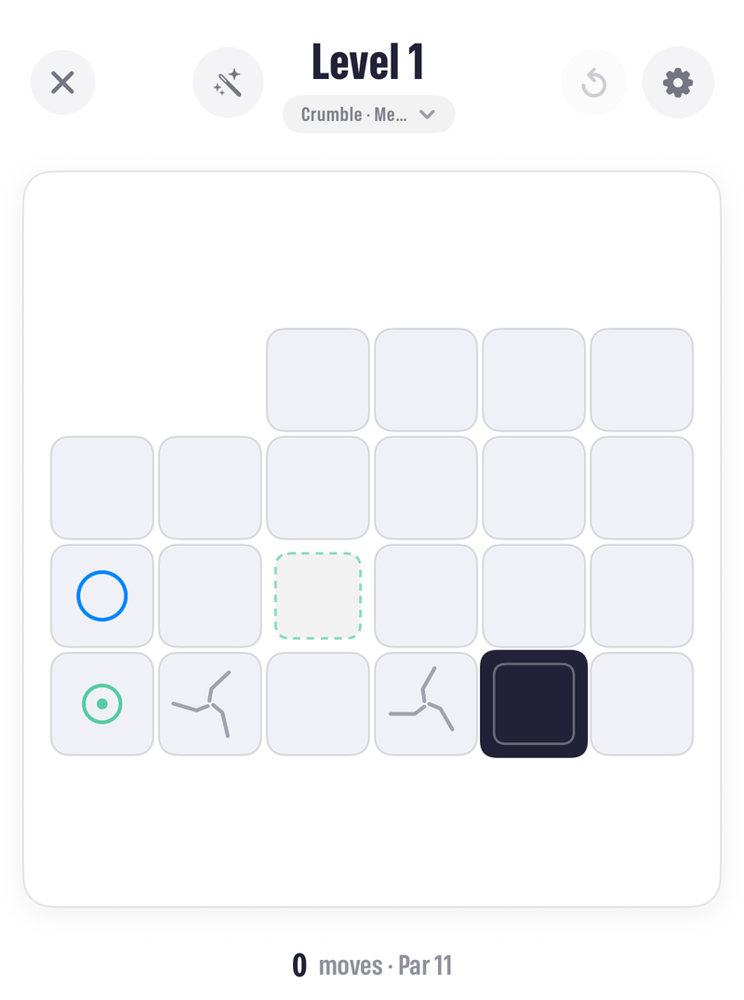
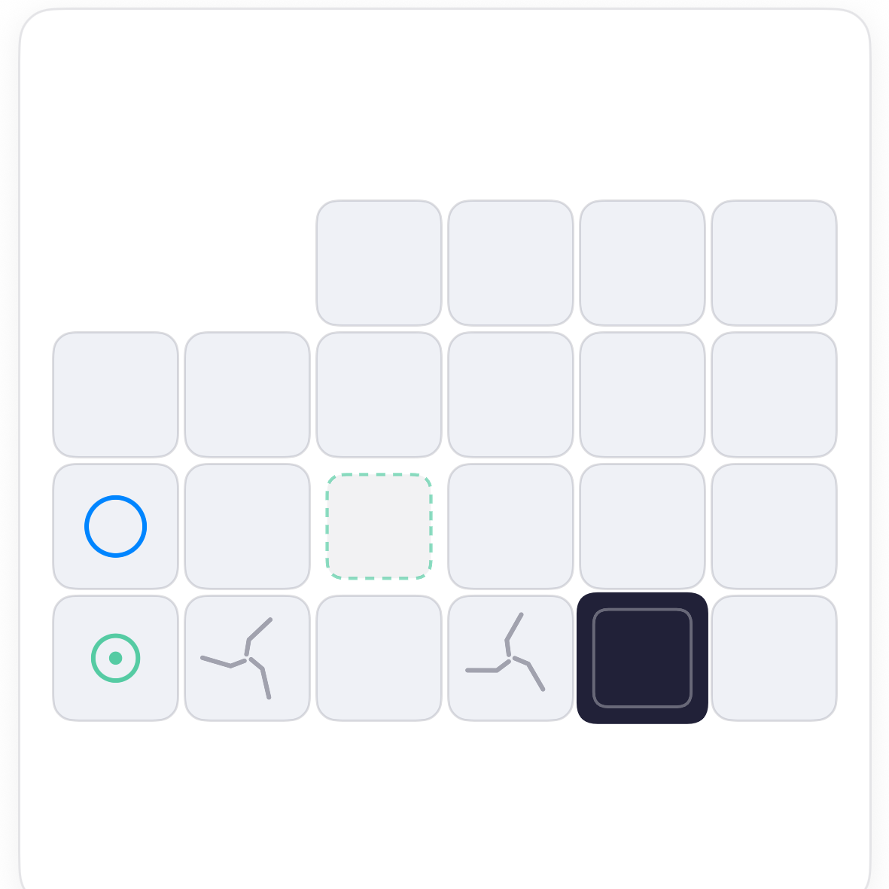
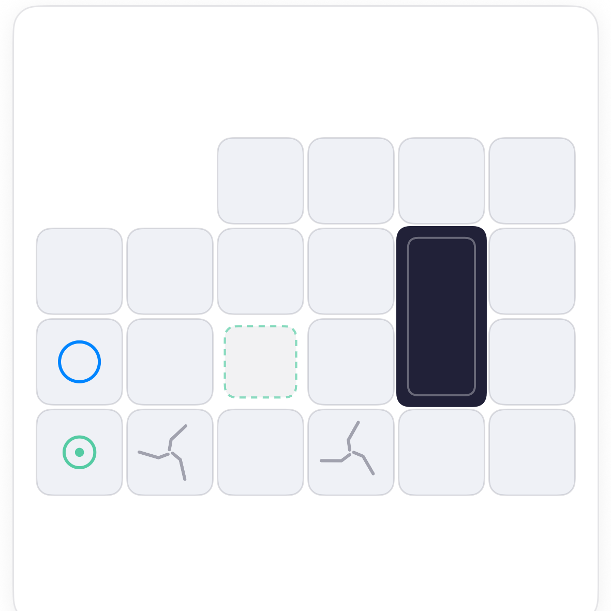
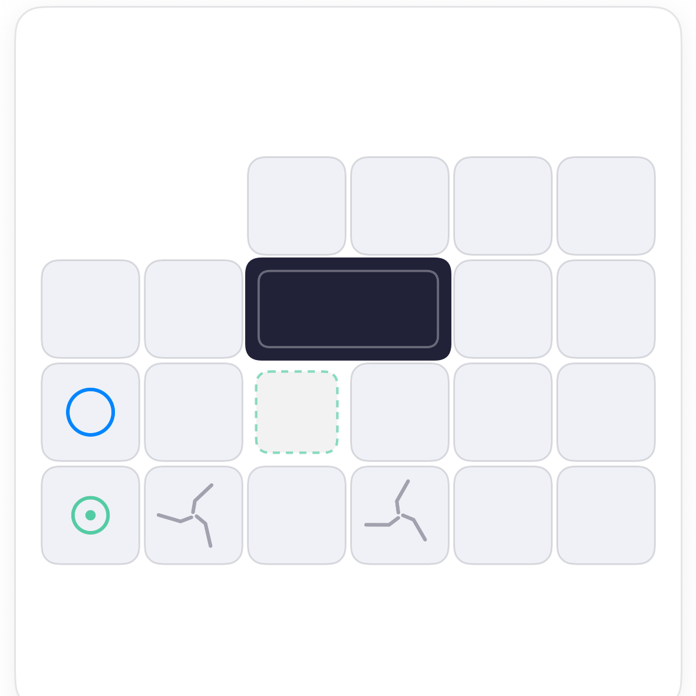
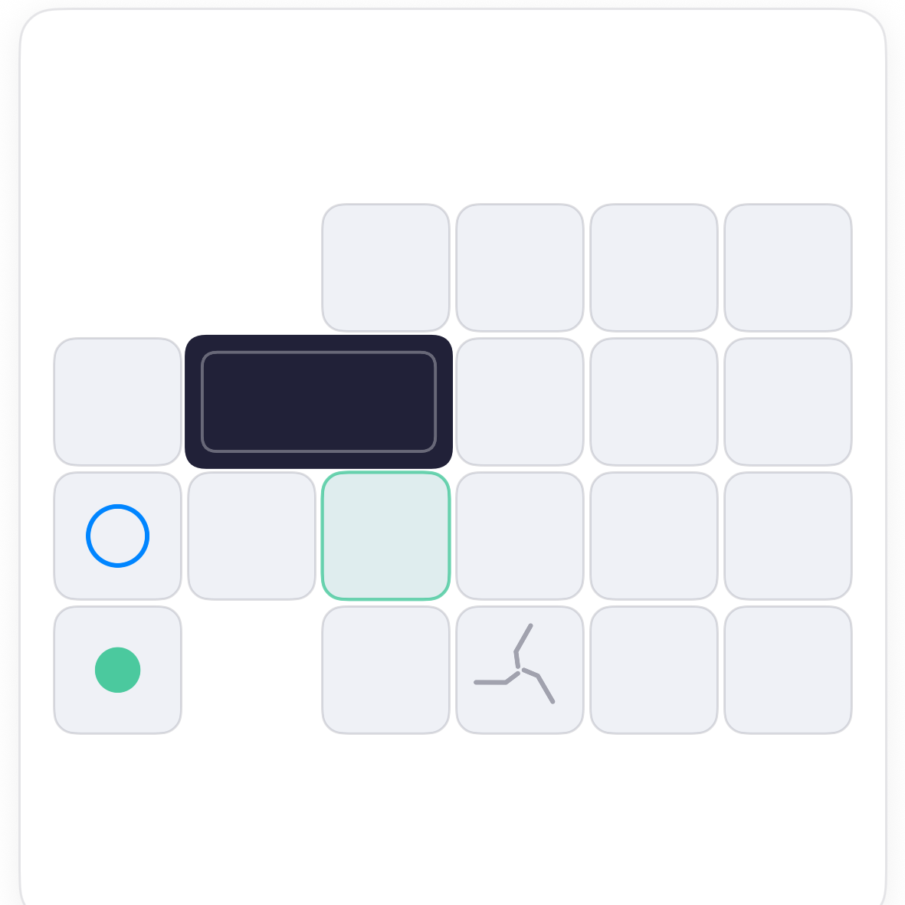

How to play Crumble Tumble.
Crumble is Tumble with a floor that changes under you. Cracked tiles crumble the moment you leave them, sunken tiles will not hold you until you press their switch, and one wrong roll can strand you. Read the floor before you tip.
The board.
Four rows of floor. The block stands at the bottom right, the ring waits at the left end of the row above. Two tiles on the bottom row are cracked, one tile in the middle is sunken, and the bottom-left corner holds the switch that raises it.

The rules.
Stranded? Undo regrows the floor. Falls still send the block back to the start.
Read the floor first.
Before the first tip, find the switch, the tile it raises, and every crack. Then plan a route that presses the switch, crosses each crack once at most, and arrives standing on the ring.




Finishing.
With the bridge up, the route to the ring runs across the middle. Land standing on it. Beating par means finding the route that uses the raised tile instead of the long way round.
A crack is only a problem when you need to cross it twice. If your route crosses one on the way out and needs it on the way back, press the switch first.
Common questions.
Does a crack crumble when I land on it?
No, when you leave it. You can stand on a cracked tile once; it falls as you roll away.
Do I have to press the switch?
Only if your route needs the sunken tile. On this board it is the short way to the ring.